Edwin Lewis
WorkCover & Justice
What follows is the truth about how I was treated by WorkCover — the system that is supposed to protect injured workers. I am laying it out plainly so that the world can see what they did to me, how the system operates, and why God has placed me in this position to expose it all.
"Speak up for those who cannot speak for themselves, for the rights of all who are destitute. Speak up and judge fairly; defend the rights of the poor and needy."— Proverbs 31:8–9
The Injury
On the 3rd of March 2025, I injured my knee on the job as a traffic controller. I was working for Asiona during the week and Energetics on the weekends — seven days a week. But I kept working. Two weeks straight, 12-hour shifts, sometimes 14 hours by the time you lace up your boots, get out on site, and get home again. I did not stop. By the 16th of March, my leg would not work any more. My last day working was in front of the Surfers Paradise Surf Club, taking out a lane while barely able to stand.
The Toxic Work Site
The job site at Asiona was toxic. My boss Danny was number three on the site — an excellent boss who knew what he was doing. But the night crew could not do their job. So Danny had to fix everything they left behind during the day, on top of his own responsibilities.
One night, the night crew had not released the water out of the water barriers. Danny released it during the day and some workers got wet feet. Danny's superior came over, and in front of approximately five of us, he jabbed Danny in the chest five times with his finger and said: "You are a disease. And you are infecting your workers."
I went to Danny afterwards and told him I had witnessed everything, and that if he needed someone to back him up, I was there. But all Danny wanted to do was get out. His superiors and his leading hand were useless — none of them stood behind him. Danny was an excellent boss, but he was the one left to fix what the night shift failed to do so the day shift could proceed.
That Friday was my last day at Asiona. I was planning to transfer to a different site once my knee healed — the environment at Asiona was too toxic to stay. But the injury happened before I could get out, and then I was stuck dealing with WorkCover — a system that turned out to be just as toxic as the site itself.
The 7-Week Fight to Get Accepted
When I injured my knee in the work environment, I went to WorkCover for help. For seven weeks, I waited for them to accept my claim. During that time, I used three weeks of my sick leave and took four weeks of my annual holidays — just to survive and keep up with the bills while they sat on it.
I sent Tracy at WorkCover ten documents — MRIs, medical reports, everything — proving that I had sustained the injury at work. I was working seven days a week. And still, Tracy kept telling me they were "still thinking about it."
So I mentioned getting a solicitor involved. The following Monday, they approved my claim. Just like that — after seven weeks of silence. And straight away they wanted to know who the solicitor was. That tells you everything about how the system works. They did not respond to ten documents of medical evidence. They responded to the threat of legal action.
The Doctors & Bone on Bone
Through WorkCover, I had to get a second opinion. They gave me a list of ten surgeons and told me to ring around myself. Why should I have to do that? I don't know any of these people. So I rang around, and I ended up with Dr. Metre. All he would do was try to let it settle. Every appointment, the same thing — just let it settle.
He eventually operated on the 16th of September, removing two large meniscus tears. But the knee did not improve. It was the same problem I had from the beginning. They continued to delay for the next couple of months. Dr. Metre injected a needle to try to stop the pain. The needle did not stop the pain. Dr. Metre then closed my case. Before that final appointment, I had demanded another MRI. That was done in early January.
On the 29th of January 2026, I met Dr. Richardson. He showed me all four MRI results. The first one showed the damage I had done to the knee. The second and third showed little change. But the fourth — taken after Dr. Metre's operation — showed that my tibia and fibula were bone on bone, rubbing together. When I was leaving, Dr. Richardson told me I needed a new knee.
And yet Dr. Metre wrote it up as only a 4% disability. A knee that is bone on bone — that needs a full replacement — and they assessed it at 4%. That is not a fair assessment. That is a system trying to minimise what it owes.
My own doctor, Dr. John Nichols, could not believe what they had done to me. He looked at me and said: "What have they done to you, Eddie? What have they done with your knee?"
Throughout this entire period, my WorkCover wage was approximately $1,000 a week — barely enough to cover the rent. That was all I could get. I was not looked after properly. I had a serious injury that required proper medical attention and a proper income to survive on, and WorkCover failed to provide either. They left me to fend for myself on a wage that did not even cover basic living expenses, while my knee continued to deteriorate under their care.
It's All a Game — You're Just a Number
At my brother Wally's wedding, 14 months ago, I met the husband of Linda's best girlfriend. Linda is Wally's wife. We got talking, and I took his number because he used to be a field leader at WorkCover — right up the top of the organisation.
He told me straight: "Ed, it's all a game. All you are is a number. It's all a game, and you've been played."
He told me what happens to most people. They go to Centrelink and every other agency they can find, and they use up all their energy being tossed from one place to the next. And then they are driven to take their own life. That is what he told me. That is the system. That is how it works. People commit suicide because of the game they are forced to play. The whole system is corrupt.
The $16,000 Payout
In February, I received an email from Matthew McCabe at WorkCover giving me 28 days to accept a $16,000 payout. I did not accept it. I was still employed at the time. My doctors still maintained that I should be on WorkCover. The medical evidence was fully documented. And yet WorkCover was attempting to close my case with a $16,000 offer for a knee that is bone on bone.
After I refused, they removed me from the system. I had already taken three weeks of sick leave, and then I resigned through injury. I am now living off my superannuation just to survive. My doctor has obtained a letter stating that I should be reinstated on WorkCover. But they are claiming that it has gone past that stage. That is wrong. I will get what I am owed.
The Solicitors — All in Cahoots
WorkCover kept me on the system for nine months, sending me to physiotherapy and psychology, but they gave me nothing of substance. They were preparing to remove me from the system entirely.
My physiotherapist was the one who advised me to get a solicitor involved. My psychologist has been documenting everything I have told her. She cannot believe how I have been treated.
I engaged my own solicitors. But when I informed WorkCover that I would be pursuing a $20 million lawsuit, they responded immediately — not to me, but through my solicitor. They should not have known. The only way WorkCover could have received that information was through the solicitors themselves. They are all working together.
Then one of the solicitors accidentally sent a document to me that was intended for WorkCover. But that is the way the Lord wanted it. It revealed exactly how they operate — working together behind closed doors.
The solicitor would only ever communicate his warnings by phone — never in writing. He told me that if I speak out against WorkCover, they will ensure I receive only a fraction of what I am owed. They cannot do that. But that is how they try to silence people.
I do not want them as my solicitors any more. I will not be a part of their corruption with WorkCover. They are both working together. I am not sending any more documents. I am suing WorkCover, and they know it. I am not playing their game. I just want the truth to come out. And I am not scared of them.
Text Message Evidence · Mark (Solicitor)
Texts to Mark — The Whole WorkCover Process
Below are the text messages I sent to Mark, my solicitor. They outline the entire WorkCover process — the injury, the MRIs, Dr. Metre, Dr. Richardson, the bone on bone diagnosis, the $16,000 payout offer, and the $20 million lawsuit. This is the full story in my own words.
Mark would only ever communicate his warnings by phone — never in writing. He told me that if I speak out against WorkCover, they will reduce my payout to a fraction of what I am owed. I told him that everything will be used within my testimony on this website. I convict the world in Jesus' name.
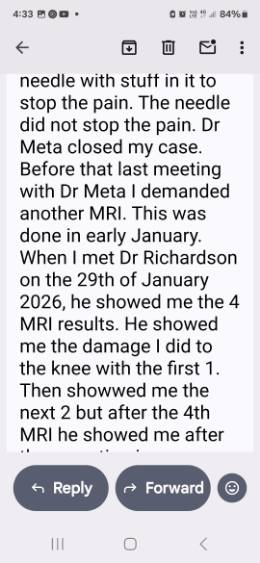
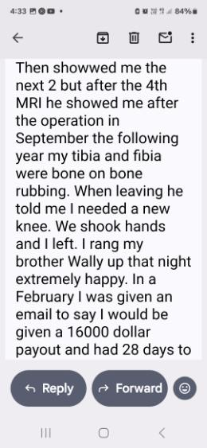
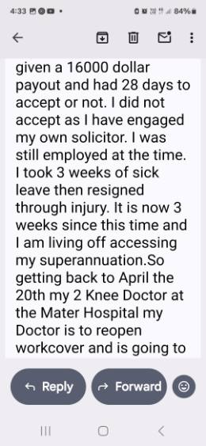
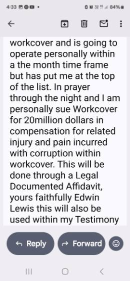
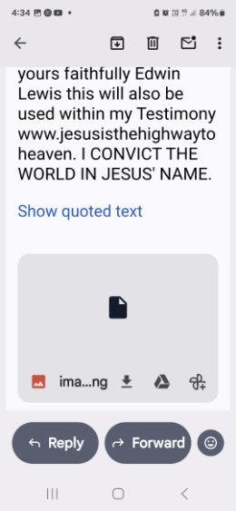
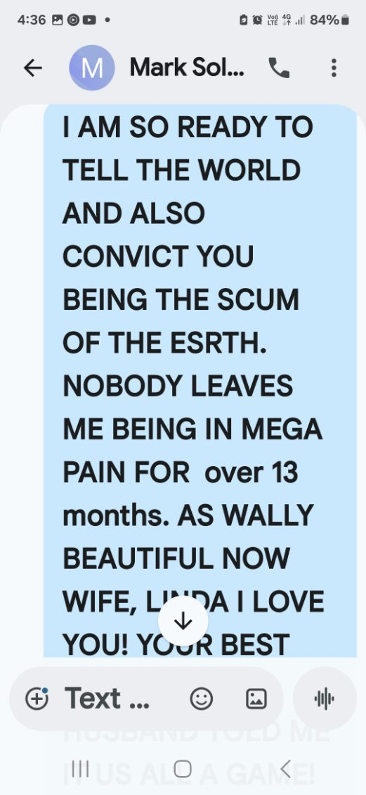
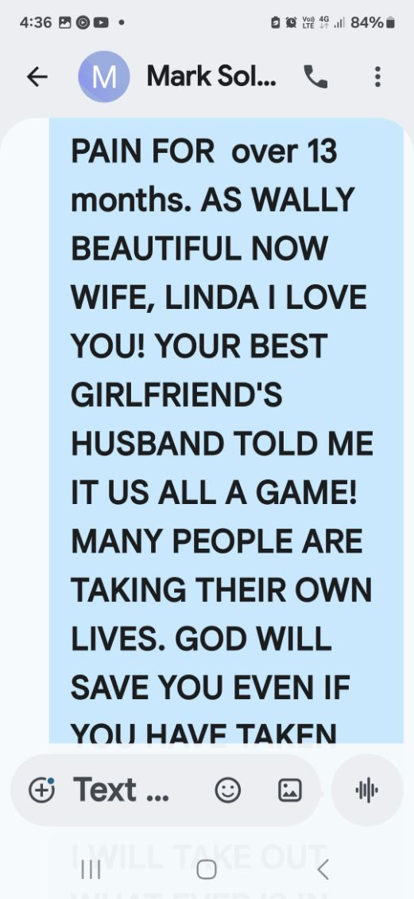
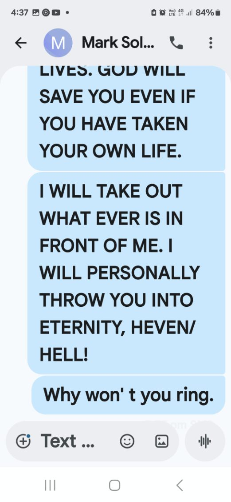
Text Message Evidence · Joey (Solicitor)
Texts to Joey — The Night I Sacked Them
Below are the text messages I sent to Joey, my solicitor, on the night I let them go. One of these messages was actually meant for a friend — but I accidentally sent it to Joey instead. That's the way the Lord wanted it.
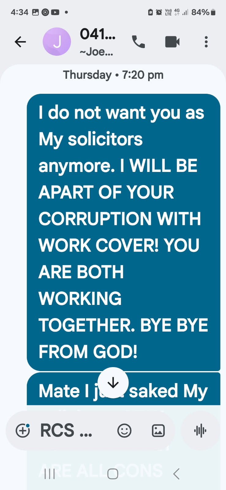
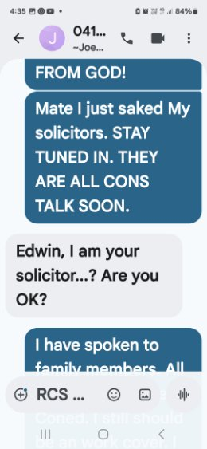
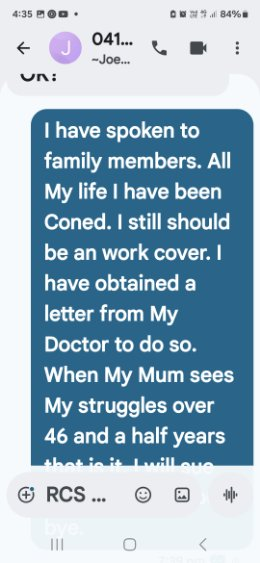
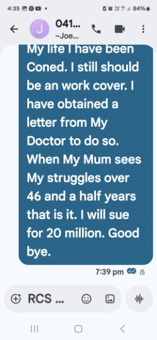
God Had Other Plans
My doctor still cannot believe what they have done to me. I should still be on WorkCover. I am personally suing WorkCover for $20 million in compensation for the injury and pain I have incurred, and for the corruption within the system. This will be done through a legal documented affidavit. I have lost my children. I have lost everything. And I have never done anything wrong.
But God had other plans. My doctor, Dr. John Nichols — his mother and father used to live next to Wally at Norman Park — cannot believe what they have done to me. He is pushing for me to be the very first operation when the chance comes. On the 20th of April, my knee doctor at the Mater Hospital confirmed he is reopening my case with WorkCover and has put me at the top of the list to operate within the month. But the only reason this is happening is because of my own doing. Nobody else helped. I would still be waiting years otherwise.
All my life I have been conned. When my Mum sees my struggles over 46 and a half years, that is it. But this will come back on them. Everything coincides until the main factor takes control — and anyone who stands in His way is gone. "My God shall supply all your needs according to His riches in glory by Christ Jesus." — Philippians 4:19.
The system is rigged against the injured, the vulnerable, and the voiceless. They play you until you break — and then they discard you. But God does not discard His people. He sees what they have done. He knows every document, every delay, every lie. And He will have the final word.
"Do not take revenge, my dear friends, but leave room for God's wrath, for it is written: 'It is mine to avenge; I will repay,' says the Lord."— Romans 12:19
Reflections & Comments
Leave a Reflection